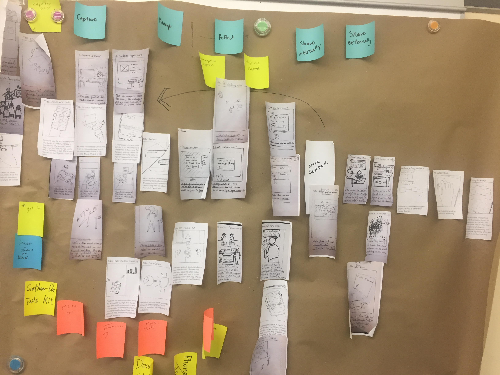
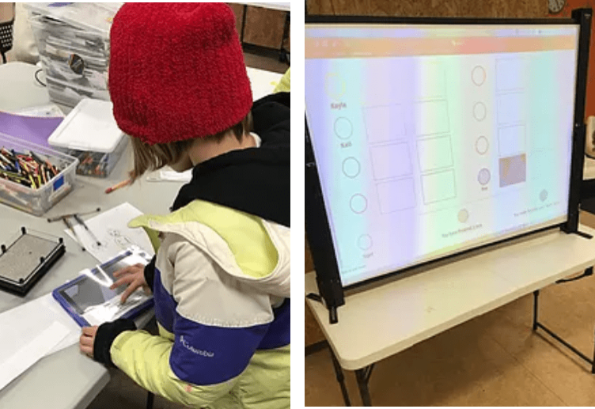
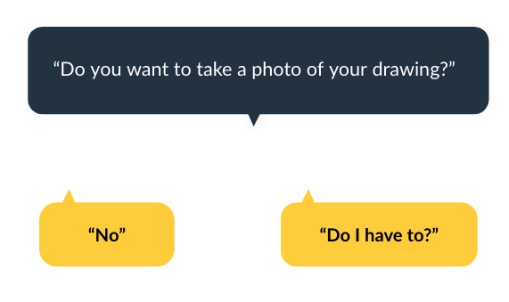
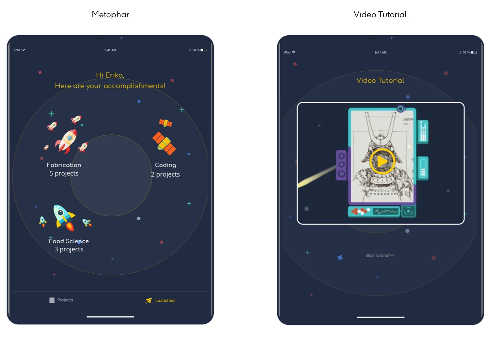

Assemble is an informal education organization that fosters creativity, respect, and community engagement located in Pittsburgh. In their Afterschool program, they provide daily educational programs to youth to gather, learn and build confidence through making. Assemble recognizes the value of documentation to develop lifelong learners, yet currently, they have no defined way to document their students’ work and learning processes.
We are building a documentation system that helps young learners tell the story of their work and interests.
A video illustrating "why a good maker needs to document" will be played to give learners a better motivation to document.
We allow teachers to recognize the report at a glance without recalling detailed information in the filters.
We intend to gain insight into the values, identities, and goals of various stakeholders and assess their current and past documentation tools and processes. A Stakeholder map was created looking at five predominant groups connected to the student portfolio making process. We then focused on three stakeholder groups who have either high interest or high influence.
To understand the value teachers see in documentation process and identify the current barriers, we conducted a survey before interviews. From the survey, all the teachers are willing to dedicate class time to documentation. However, they will only spend 0-15 minutes, which is the minimal time. We interviewed two teaching artists: Shannon Thompson and Jayla Patton and gathered their opinions on past, current and potential documentation practices. We also sent out the survey before conducting our on-site user study at Assemble.
Finally, we had many questions about the learners themselves. Interviewing format would yield poor results since young children are not able to express their needs and feelings. Inspired by the Universal Methods of Design, we were prompted to use Cultural Probe as a way to gather childrens' hidden cognitive process. In the case of this cultural probe, students were asked to design museum of themselves. They were given an example of a floor plan of a museum and prompted to recall some of their own projects they could put on display. The resulting museum became a gateway into their motivation, interests, and organization of their works.


To illustrate the HMW, each team member sketched 5 storyboards. To synthesize the ideas into a cohesive design concept, each storyboard was printed and cut to rearrange.
To reframe our challenges into actionable, obtainable solutions, we proposed an experience map to describe the students’ journey through a project, with nudges and scaffolding along the way.
When designing the experience for a student at Assemble, we noticed we were creating a sequence of experiences that resulted in two loops along a student’s portfolio building journey. The inner loop describes a projection of real-time student capture images, students using tablets to capture information, and then students completing reflection prompts.
Because they never had a documentation system before, we designed a MVP prototype to see if our design concept can fit into their current settings. Are learners willing to user our service to document? How will the learners interact with capture + reflect interface? Can the projection nudge learners to document?
When using the app, students could take real photos by switching from paper prototypes to camera function of Facebook and write reflections above the image. Once the students have finished their documentation, their photos will be displayed on the screen.
Students were unwilling to do the documentation because they did not understandnad the concept or value of documentation.
We created a metophar of "launching the satellite" to bring a familiar language to the unique users we have. A video tutorial illustrating how an expert's work is achieved from scratch was also created to help users understand the value of documentation.
We further developed our prototype with a completed interaction flow of the tablet app, and also added the tutorial video to our testing process.
2 of 3 students only selected 1 learning interest in the beginning because they did not realize they could choose multiple ones.
2 students did not necessarily need feedback from local artists for the project they were working on. They would only ask local artists when it was an important thing. Usually, they would ask feedback from peers or Assemble teachers.

A digital space where young learners can capture, manage their work and ask for feedback.
The documentation is a new experience for teachers and students. We wanted to automate actions that aren’t integral to the learning process (like capturing and uploading images) so there isn’t much time wasted on documentation. Students can finish the documenting process within several steps, and teachers and stay focused on guiding students in class.
We wanted students to use documentation as a way to see their progress in specific skills and areas over the course of many projects so that they would become more confident in their ability to learn and create.Hence, we designed a customized tagging system for them. So that learners can follow their own learning interest to categorize their projects and create their unique portfolio.
One challenging question arising from our research is: how can students be encouraged to share their work and receive feedback to improve their work? During our field trip, we observed that children kept asking teachers how they did it. Learners admire their teachers’ work. Hence, we created “feedback from role model”. By this feature learners can get feedback from local artists. Not only can learners build up their confidence but also get authentic advice that will help them improve their skills.